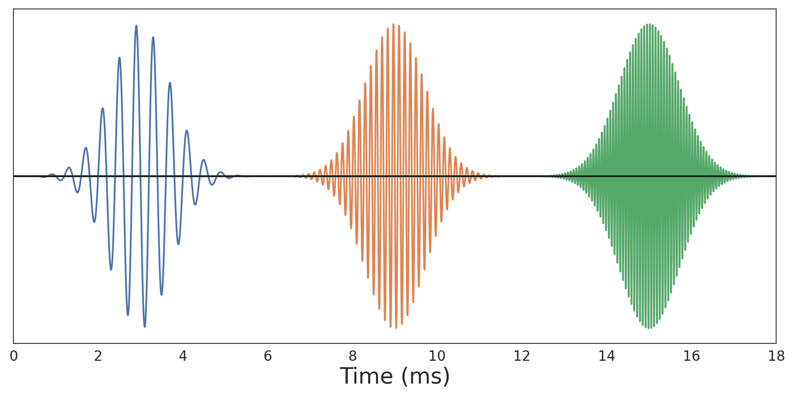
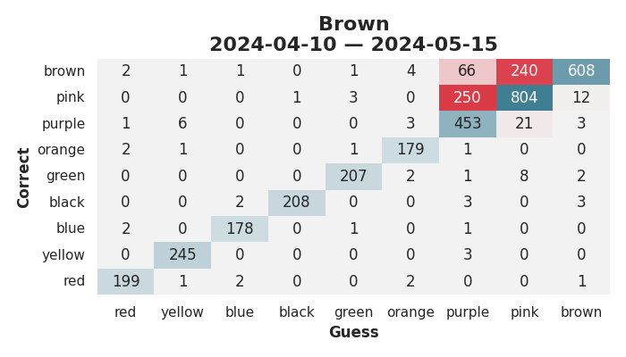

<h1 style="font-size: 3em; line-height: 2">Teaching Children Perfect Pitch</h1> <br/> <br/> <span style="font-size: 2.5em"> Paul Ganssle </span> <br/> <br/> <img src="images/pganssle-logos.svg" height="40px" alt="@pganssle"> <br/> <br/> <span style="font-size: 1em;"><em>This talk on Github: <a href="https://github.com/pganssle-talks/chord-trainer">pganssle-talks/chord-trainer</a></em> </span> <br/> <a rel="license" href="https://creativecommons.org/publicdomain/zero/1.0/"> <img src="external-images/logos/cc-zero.svg" height="45px"> </a> <br/> Notes: Good morning! I'm Paul Ganssle, and today I'd like to talk to you about my application implementing the Eguchi method for pitch training.
# Relative and Absolute Pitch <div class="gallery two-high fragment disappearing-fragment fade-out" data-fragment-index="0"> <div class="gallery-item">  </div> <div class="gallery-item"> </div> </div> Notes: To put everyone on the same page, most people have what's called relative pitch — you can tell if one sound is higher or lower than another sound, but you cannot hear a sound and say, "Oh, that's a middle C" without a known reference pitch — that is why, for example, the stereotypical barbershop quartet will have someone blowing into a pitch pipe before they start singing — they know what note that's supposed to be, and they know where they should be singing relative to it. In contrast, absolute pitch (also sometimes called perfect pitch), is when you can identify notes without the nee d of a reference pitch. To visually demonstrate this, you can see if you look at these three waveforms at the top, it's pretty easy to see which ones are higher and lower frequency than the others, but it would be pretty difficult to estimate the actual frequencies at a glance, but if you were to plot in the fourier domain, you can pretty easily see what frequency each one is just by looking at it. In some ways I've heard absolute pitch described as perceiving sound more like the way most of us perceive color — you can look at a color and know that it's red or yellow or blue or something, you don't need to compare objects to swatches to determine how red or blue they are, you just look at it and know what color it is. -- # Teaching Absolute Pitch to Children <img src="images/study_abstract_00.png" class="screenshot splash"> <!-- alt="A screenshot of the abstract of a paper in Psychology of Music from 2012. The title is: A longitudinal study of the process of acquiring absolute pitch: A practical report of training with the ‘chord identification method’ The author is Ayako Sakakibara from the Ichionkai Music School, Tokyo, Japan The abstract is: The purpose of this study was to investigate longitudinally the process of acquiring absolute pitch (AP). Twenty-four young children (aged 2 to 6 years) without AP were trained to acquire AP using Eguchi’s (1991) Chord Identification Method (CIM). All children were able to acquire AP (except two who ceased training). Results suggest that, at a minimum, children younger than 6 years old are capable of acquiring AP through intentional training. Furthermore, children’s errors observed during training suggested the transition of different strategies relying respectively on tone height and tone chroma. Initially, children identified chords using a strategy depending primarily on tone height, then gradually they began to attend to tone chroma to identify chords and this process ultimately led to acquisition of AP."> --> Notes: I knew about perfect pitch and thought it might be cool to have, but I had always been under the impression that it was not something you could learn — either your brain processes sound this way or it doesn't. But then I came across a paper from 2012 claiming that with enough training, it is possible to acquire absolute pitch in childhood. It comes from a school in Japan called the Ichionkai Music School, and they claim to have a 90% success rate using their method to train children between ages 2 and 6, and conveniently they lay out the method in the paper. -- ## Reasons for Skepticism - Baseline credence for psychology research should be extremely low - Study was performed by the Ichionkai Music School - The dropout rate was ridiculously low for this method <br/> <br/> <div class="fragment disappearing-fragment nospace-fragment fade-out" data-fragment-index="0"> <img src="images/replication_crisis_wikipedia_ss.png"> </div> <div class="fragment disappearing-fragment nospace-fragment fade-in-and-out" data-fragment-index="0"> <blockquote style="border: 1px solid black"> <b>Twenty-two participants out of 24</b> were able to conduct the amount of daily practice needed for the chord identification method, 4–5 sessions a day, almost every day throughout the period of the training. Two participants stopped the training for personal reasons unrelated to the current project. <b>The remaining 22 participants who continued the training were able to acquire AP.</b> </blockquote> </div> <div class="fragment appear" style="margin-top:2em" data-fragment-index="1"> ## Reasons to Try Anyway - Probably no one is really trying to teach kids perfect pitch - Critical period effects are probably real - Total time commitment isn't high (though distributed in an annoying way) - ~75-150 hours over 1-2 years - It can be a bonding experience </div> Notes: There are some reasons to be skeptical of these claims. For one thing, after the advent of the reproducibility crisis — which I strongly suggest you look up if you don't already know about it — we should probably be pretty skeptical of *any* studies, much less non-preregistered accounts coming from a music school that sells books teaching the method. - One thing that is very fishy about the study to me is that in the paper they say that they recruited 24 students and told the parents that they could stop at any time, then taught them the method and followed their progress. They claim that 2 students dropped out, and the remaining 22 *all* acquired absolute pitch. This seems like a much bigger effect size than I would expect for something where the common wisdom is that it's impossible. - This method, as you will soon see, involves quizzing 2-6 year olds *five times a day* for *several years*. I would submit that getting a 2-6 year old to do *anything* even *once a day* is a challenge. Unless Japanese culture and patterns of life are *very different* around young children than they are here, I would not expect a 90% compliance rate on an invention asking parents to brush their childrens' teeth in the morning and night, so 5 daily practices strains credibility. That said, it's not impossible that this is just an understudied area, and that no one has really tried this kind of intervention before. And critical periods — where it's easier to do something during a certain part of your life and not in others — are probably a real effect. At the end of the day, the reason I decided to go for it was that I thought it might be a fun thing to do with my children, and despite being distributed in an annoying way, the overall time commitment is not especially high.
# Eguchi's Method <figure> <img src="external-images/eguchi-book-cover-upscale.png" class="screenshot" style="max-height: 40dvh" alt="Cover of a book featuring a lamp and a metronome. The text is all in Japanese, and reads (from right to left): ピアノレッスンを変える (3) (Side) 新·絶対音感プログラ (Title) 才能は身につけられる (Text in red) 江口寿子 · 江口彩子 — 共著 (Authors) "/> <figcaption><i>New Absolute Pitch Program by Hisako Eguchi and Ayako Eguchi</i></figcaption> </figure> <br/> <ul> <li>Chords associated with colored flags</li> <li class="fragment fade-in" data-fragment-index="0">Child must be able to identify each chord with 100% accuracy</li> <li class="fragment fade-in" data-fragment-index="1">New chords are introduced every 2 weeks</li> <li class="fragment fade-in" data-fragment-index="2">Do 25 identifications per session, <u>5 sessions per day</u></li> <li class="fragment fade-in" data-fragment-index="4">When all chords are learned, scale back sessions to maintain 100% accuracy, continue until aged 9</li> Notes: Which brings us to the method. The paper refers to it as Eguchi's method, and it is described fairly well in the paper, and better in this book — which is written in Japanese, and which I only have a partially translated copy of. It works by taking a number of chords and associating them with colored flags. You introduce the chords to the child one at a time, quizzing them on the chords until they can get the answer correct 100% of the time, with a minimum of 2 weeks before introducing a new chord. You do 5 sessions a day, and each session is about 25 identifications. When the child has mastered all the chords, they can scale back the training sessions to maybe once per week — as long as they continue to do it perfectly. -- <style> table.chord-chart td { text-align: center; } td.keyboard img { width: 20dvw; } td.chord-notes { width: 7.5dvw; text-align:center; } td.chord-color { width: 5 dvw; } td.chord-name { width: 7.5 dvw; } td.left-border { border-left: 1px solid black; } </style> # White Chords <br/> <table class="chord-chart"> <tr> <td class="chord-notes fragment custom outline" data-fragment-index="0">C E G</td> <td class="chord-color">Red</td> <td class="chord-name">C</td> <td class="keyboard"> </td> <td class="chord-notes left-border">C F A</td> <td class="chord-color">Yellow</td> <td class="chord-name">F/C</td> <td class="keyboard"> <img src="images/color_keyboard/yellow.svg"> </td> </tr> <tr> <td class="chord-notes">B D G</td> <td class="chord-color">Blue</td> <td class="chord-name">G/B</td> <td class="keyboard"> <img src="images/color_keyboard/blue.svg"> </td> <td class="chord-notes left-border">A C F</td> <td class="chord-color">Black</td> <td class="chord-name">F/A</td> <td class="keyboard"> <img src="images/color_keyboard/black.svg"> </td> </tr> <tr> <td class="chord-notes">D G B</td> <td class="chord-color">Green</td> <td class="chord-name">G/D</td> <td class="keyboard"> </td> <td class="chord-notes left-border fragment custom outline" data-fragment-index="0">E G C</td> <td class="chord-color">Orange</td> <td class="chord-name">C/E</td> <td class="keyboard"> <img src="images/color_keyboard/orange.svg"> </td> </tr> <tr> <td class="chord-notes">F A C</td> <td class="chord-color">Purple</td> <td class="chord-name">F</td> <td class="keyboard"> <img src="images/color_keyboard/purple.svg"> </td> <td class="chord-notes left-border">G B D</td> <td class="chord-color">Pink</td> <td class="chord-name">G</td> <td class="keyboard"> </td> </tr> <tr colwidth="6"> <table class="chord-chart"> <tr> <td class="chord-notes fragment custom outline" data-fragment-index="0">G C E</td> <td class="chord-color">Brown</td> <td class="chord-name">C/G</td> <td class="keyboard"> <img src="images/color_keyboard/brown.svg"> </td> </tr> </table> </tr> </table> Notes: The chords are split into two groups, the white key chords and the black key chords. The first 9 chords are all white key chords, and you'll notice a lot of repetition here — for example red, orange and brown are all made up of E, G, and C. Basically, these are 3 chords - C, F and G, and the two "inversions" of those chords — where you move the root of the chord to one other than the nominal note. For these chords, you are supposed to only use colors and not refer to the note names or the names of the chords. -- # Black Chords <br/> <table class="chord-chart"> <tr> <td class="chord-notes">A C♯ E</td> <td class="chord-color">Gray</td> <td class="chord-name">A</td> <td class="keyboard"> <img src="images/color_keyboard/gray.svg"> </td> <td colspan="3" rowspan="6" style="border:none; width:32.5dvw"> <ul> <li>Can test individual "white note" identification</li> <li class="fragment appear">Switch to calling out note names (C-E-G, A-C♯-E, etc)</li> <li class="fragment appear">Can introduce inversions if having trouble (C♯-E-A, F-D-B♭)</li> </ul> </td> </tr> <tr> <td class="chord-notes">D F♯ A</td> <td class="chord-color">Tan</td> <td class="chord-name">D</td> <td class="keyboard"> <img src="images/color_keyboard/tan.svg"> </td> <tr> <tr> <td class="chord-notes">E G♯ B</td> <td class="chord-color">Light Green</td> <td class="chord-name">E</td> <td class="keyboard"> <img src="images/color_keyboard/lightgreen.svg"> </td> </tr> <tr> <td class="chord-notes">B♭ D F</td> <td class="chord-color">Light Purple</td> <td class="chord-name">B♭</td> <td class="keyboard"> <img src="images/color_keyboard/lightpurple.svg"> </td> </tr> <tr> <td class="chord-notes">E♭ G B♭</td> <td class="chord-color">Sky Blue</td> <td class="chord-name">E♭</td> <td class="keyboard"> </td> </tr> </table> Notes: After the child has mastered the white key chords, according to the book they should be able to perfectly pick out the individual "white key" notes in that range. This is also the point at which you start introducing the names for individual notes, so they stop calling out "red" and start calling out "C-E-G". You'll note that this list of chords doesn't include any inversions — the method suggests starting with these 5 and only introducing inversions if the child is having trouble mastering these chords.
<div class="fragment disappearing-fragment fade-out" data-fragment-index="0"> <img src="images/vxxx-red-yellow.png" class="screenshot splash" style="height: 75dvh" alt="A screenshot of a simple website with a dark background and two colored rectangles — a red one on the left and a yellow on the right. Beneath it is text that says 0/0 and a pulldown that says 'Yellow (CFA)'" /> </div> <div class="fragment disappearing-fragment fade-in-and-out" data-fragment-index="0"> </div> <div class="fragment disappearing-fragment fade-in-and-out" data-fragment-index="1"> </div> <div class="fragment disappearing-fragment fade-in-and-out" data-fragment-index="2"> </div> <div class="fragment disappearing-fragment fade-in" data-fragment-index="3"> </div> <div class="fragment disappearing-fragment fade-in" data-fragment-index="4"> <img src="images/vxxx-manual-player.png" class="screenshot splash" style="height: 75dvh" alt="A screenshot of a simple website with a dark background and two colored rectangles — a red one on the left and a yellow on the right. Beneath it is text that says 0/0 and a pulldown that says 'Yellow (CFA)'" /> </div> Notes: OK, so you want to do the method, presumably you have a piano you can play, and you can generate random sequences of chords in your head. Oh and remember we're doing this 5 times a day, so hopefully you don't like going too far away from your house, or your piano is very portable. No, of course we're not going to do any of that — this kind of thing is exactly what being a programmer is all about! So obviously I built an app! I threw together a quick HTML / Javascript / CSS single-page app, permissively-licensed open source, and published via github pages. Here is what it looks like, it's pretty simple: it displays the chords you are on, it will play one randomly, and you pick which one you think it is. If you get it right, the kitty is happy. If you get it wrong, the kitty is sad. When the child starts mastering chords. you can move on to the next level, and when you get past the last white key chord, the app automatically starts displaying the note names. -- <video src="videos/cim_how_to_clip.webm" style="height: 70dvh" controls type="video/webm"> Notes: So, let's see it in action! -- <div style="display: flex; flex-direction: rows; align-items: center; justify-content:space-around; height: 80dvh"> <img src="images/pwa-install-app.png" style="max-height:100%; max-width: 30dvh"> <img src="images/pwa-install-icon.png" style="max-height:100%; max-width: 40dvh"> Notes: Additionally, I found out that when you have a simple single page application like this, it's fairly easy to turn it into a "progressive web app", so actually if you open it on your phone or tablet in a browser, you can click "install this app", and it will actually install it like a native application.
# Is it Working? Notes: OK, so presumably the big question you are asking now is — does it work? The answer I have is: I don't know. My son started using the app just before he turned 6 years old, and he's been doing it for about 10 months now. He has mastered 8 chords and as you can see he's making slow and steady progress towards the final white key chord. -- <!-- .slide: data-visibility="hidden" --> # Color Progression - Yellow → Blue: 18.0 days - Blue → Black: 32.0 days - Black → Green: 25.0 days - Green → Orange: <span class="fragment highlight-green" data-fragment-index="0">14.0 days</span> - Orange → Purple: <span class="fragment highlight-red" data-fragment-index="1">82.0 days</span> - Purple → Pink: <span class="fragment highlight-green" data-fragment-index="0">17.0 days</span> - Pink → Brown: <span class="fragment highlight-red" data-fragment-index="1">86.0 days</span> <br/> <div class="gallery two-wide"> <div class="gallery-item"> </div> <div class="gallery-item">  </div> </div> -- <video src="videos/pitch_test_shorter.webm" controls type="video/webm"> Notes: I know of one other person using the app, and weirdly she actually started the method *before* the app was developed, so she's a bit ahead of my son. Her dad says she's not perfect on individual note identification yet, but as you can see she seems to be doing pretty well to me.
<figure> <figcaption style="font-size: 1.5em"> <a href="https://pganssle.github.io/cim">https://pganssle.github.io/cim</a> </figcaption> </figure> <em>Can you help?</em> - More users - Help with documentation - Code contributions - JP → English Translation Notes: So, that is my talk, here's a link to the application, and if you're interested I'd love to have more users or contributors. We could use help with documentation, with code, or also if you are interested in translating parts of a book from Japanese to English, please get in touch!